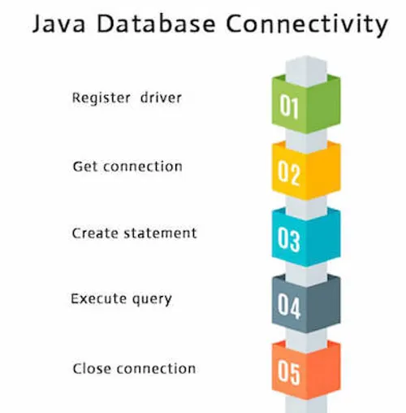

Learn the basics of Java programming language, including syntax, data types, control structures, and object-oriented programming concepts.
| Topic | Description |
|---|---|
| Variables and Data Types | Learn about different data types and how to declare variables in Java. |
| Control Structures | Understand loops and conditional statements in Java. |
| Object-Oriented Programming | Explore classes, objects, inheritance, and polymorphism. |
- Variables and Data Types
- Control Structures
- Object-Oriented Programming
Familiarize yourself with popular Java frameworks such as Spring, Hibernate, and JavaServer Faces (JSF) for back-end development.
| Framework | Description |
|---|---|
| Spring Framework | A comprehensive framework for building enterprise Java applications. |
| Hibernate | An object-relational mapping (ORM) framework for Java applications. |
| JavaServer Faces (JSF) | A component-based UI framework for building web applications. |
- Spring Framework
- Hibernate
- JavaServer Faces (JSF)
Gain proficiency in front-end technologies such as HTML, CSS, and JavaScript to create user interfaces for web applications.
- HTML
- CSS
- JavaScript

Learn how to work with databases such as MySQL, Oracle, and MongoDB to store and retrieve data for your applications.
- MySQL official guide
- Oracle official guide
- MongoDB official guide
Familiarize yourself with version control systems like Git to manage your code and collaborate with other developers.
- Git guide
- GitHub guide
- Bitbucket guide
Understand how to use tools like Jenkins for continuous integration to automate the build and deployment process of your applications.
- Jenkins preference
- Travis CI preference
- CircleCI preference